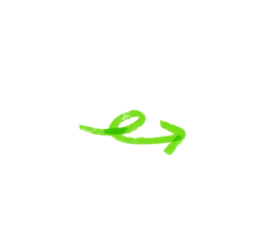

Ваш путь к качественному
обучению начинается здесь-
вместе мы достигнем больших
высот!
Объединения МБУ ДО Центра технического творчества детей и юношества
"Технопарк" решают важную задачу приобщения детей
к научно-техническому творчеству. Нашей стране нужны талантливые
инженеры и ученые – творцы новых инновационных технологий,
и путь в науку и технику для многих из них начинается здесь.
Как работает?
Укрепление доверия
Сайт способствует формированию
положительного
имиджа преподавателя
и укрепляет связь с учениками и их родителями
Узнайте о педагогах онлайн
Возможность узнать о преподавателе
не выходя из дома
Формат разделов
Информация представлена
в удобном формате разделов:
Занимаемая должность,
Образование, Стаж работы,Достижения,Фотогалерея
Приступить!
 Руководство и педагогический состав